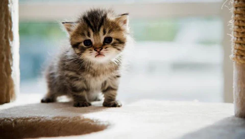

Sabias que puedes adoptar gatitos que sufren por personas que no valoran la vida animal ?, protegelos !.

Siempre puede haber un gatito que necesite de tu ayuda, nunca dudes en aportar ayuda a un animal.